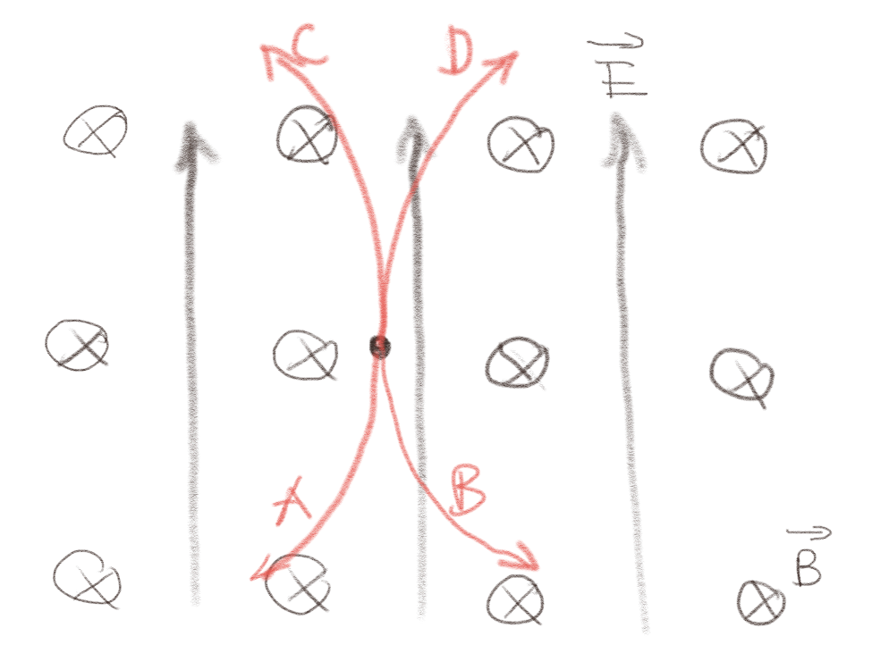
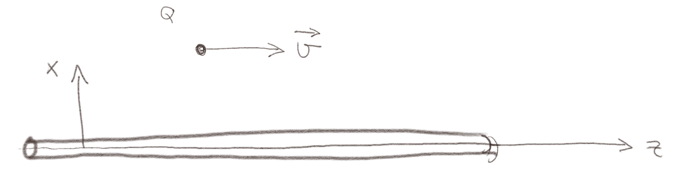
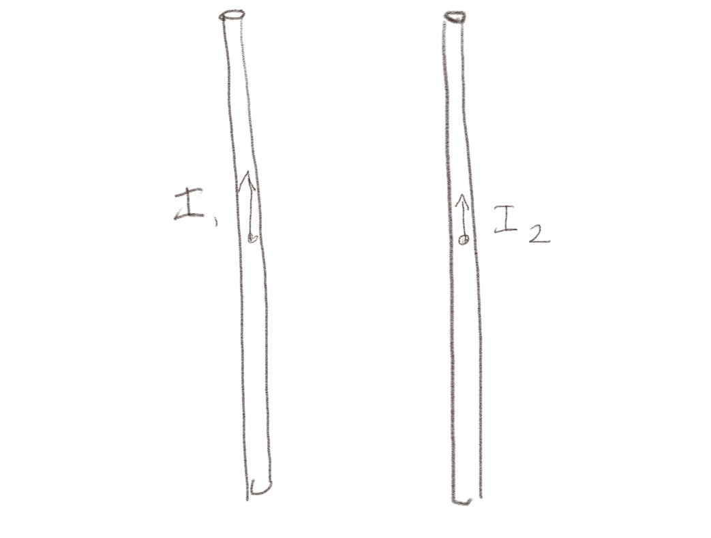
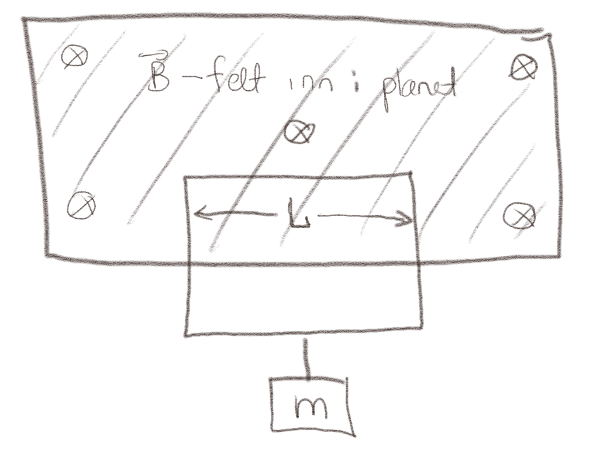

(Lærebok 10.3)
En proton slippes fra ro i uniforme \( \vec{E} \) og \( \vec{B} \)-felt som vist på figuren.

a) Hvilken bane vil protonet følge i et lite tidsrom etter at det ble sluppet?
C
Den starter i ro. Da vil det ikke virke noen kraft fra \( \vec{B} \)-feltet. Den vil derfor begynne å bevege seg i retning av \( \vec{E} \)-feltet. Når den får litt hastighet oppover, vil kraften fra \( \vec{B} \)-feltet virke i retningen \( \vec{v}\times \vec{B} \) som vil være til venstre. Den vil derfor følge bane C.
(Lærebok 10.3.2)
Det går en strøm \( I \) gjennom en lang, rett ledning i \( z \)-retningen. En ladning \( Q>0 \) beveger seg med en hastighet \( \vec{v} \) langs \( z \)-aksen som vist i figuren.

a) Hvilken retning vil det magnetiske feltet fra ledningen ha der hvor \( Q \) er?
\( \y \)
Vi finner det magnetiske feltet fra Biot-Savarts lov. Men vi trenger ikke her finne størrelsen på feltet, kun retningen. Retningen er gitt av $$ \begin{equation} \frac{I \d \vec{l}\times \Rhat}{R^2} \; . \tag{5} \end{equation} $$ hvor \( \d \vec{l} \) er i retningen \( \z \) og \( \Rhat \) er i retningen \( \x \) slik at \( \d \vec{l}\times \Rhat \) er i retningen \( \z \times \x = \y \).
b) Hvilken retning har kraften på ladningen \( Q \)?
\( -\x \)
Retningen på kraften vil være gitt av Lorentz kraften \( \vec{F} = Q \vec{v} \times \vec{B} \). Siden \( \vec{v} = v\z \) og \( \vec{B} = B_0 \y \) vil kraften være i retningen \( \z \times y = -\x \). Kraften er inn mot lederen.
(Lærebok 10.3.3)
(Lærebok 10.3.4)
Det går to strømmer \( I_1 \) og \( I_2 \) gjennom to lange, parallelle, rette ledere som vist i figuren under.

a) Hvilken vei går magnetfeltet fra ledningen med strømmen \( I_1 \) i posisjonen til den andre lederen?
Inn i planet
Vi finner retningen på magnetfeltet ved hjelp av Biot-Savarts lov. Bidraget fra et strømelement \( I \d \vec{l} \) er $$ \begin{equation} \d \vec{B} = \frac{\mu_0}{4 \pi}\frac{I \d \vec{l} \times \Rhat}{R^2} \tag{6} \end{equation} $$ Her peker \( I \d \vec{l} \) i retningen til \( I_1 \) og \( \Rhat \) peker til høyre, slik at magnetfeltet ved lederen \( I_2 \) etter høyrehåndsregelen peker i inn i planet.
b) Hvilken vei virker kraften på ledningen med strømmen \( I_2 \)?
Mot venstre.
Kraften på et strømelement \( I_2 \d \vec{l} \) vil være $$ \begin{equation} \d \vec{F} = I_2 \d \vec{l} \times \vec{B} \tag{7} \end{equation} $$ Her peker \( I_2\d \vec{l} \) oppover og \( \vec{B} \) peker inn i planet slik at kraften på \( I_2 \) etter høyrehåndsregelen vil peke mot venstre.
(Lærebok 10.3.5)
Det går en strøm \( I \) i en strømkrets i et magnetfelt \( \vec{B} \). Magnetfeltet \( \vec{B} \) et begrenset til det skraverte området i figuren og er tilnærmet null utenfor.

a) Hvilken vei må \( I \) strømme for at massen skal holde seg flyende i ro?
Med klokken
Kraften på et strømelement \( I \d \vec{l} \) vil være gitt av \( \d \vec{F} = I \d \vec{l} \times \vec{B} \). Vi ser at bidraget fra de to vertikale elementene vil være like store og i motsatt retning, så de bidrar ikke med noen netto kraft. Netto kraft kommer derfor fra den øverste lederen. Hvis strømmen går med klokken vil bidraget fra dette elementet ettet høyrehåndsregelen være oppover. Strømmen må derfor gå med klokken for at massen skal holde seg flyvende.